优雅的 RACCommand
RACCommand 是一个在 ReactiveCocoa 中比较复杂的类，大多数使用 ReactiveCocoa 的人，尤其是初学者并不会经常使用它。
在很多情况下，虽然使用 RACSignal 和 RACSubject 就能解决绝大部分问题，但是 RACCommand 的使用会为我们带来巨大的便利，尤其是在与副作用相关的操作中。
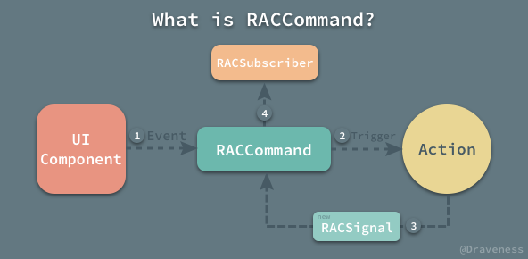
文章中不会讨论
RACCommand中的并行执行问题，也就是忽略了allowsConcurrentExecution以及allowsConcurrentExecutionSubject的存在，不过它们确实在RACCommand中非常重要，这里只是为了减少不必要的干扰因素。
RACCommand 简介
与前面几篇文章中介绍的 RACSignal 等元素不同，RACCommand 并不表示数据流，它只是一个继承自 NSObject 的类，但是它却可以用来创建和订阅用于响应某些事件的信号。
@interface RACCommand<__contravariant InputType, __covariant ValueType> : NSObject
@end
它本身并不是一个 RACStream 或者 RACSignal 的子类，而是一个用于管理 RACSignal 的创建与订阅的类。
在 ReactiveCocoa 中的 FrameworkOverview 部分对 RACCommand 有这样的解释：
A command, represented by the RACCommand class, creates and subscribes to a signal in response to some action. This makes it easy to perform side-effecting work as the user interacts with the app.
在用于与 UIKit 组件进行交互或者执行包含副作用的操作时，RACCommand 能够帮助我们更快的处理并且响应任务，减少编码以及工程的复杂度。
RACCommand 的初始化与执行
在 -initWithSignalBlock: 方法的方法签名上，你可以看到在每次 RACCommand 初始化时都会传入一个类型为 RACSignal<ValueType> * (^)(InputType _Nullable input) 的 signalBlock：
- (instancetype)initWithSignalBlock:(RACSignal<ValueType> * (^)(InputType _Nullable input))signalBlock;
输入为 InputType 返回值为 RACSignal<ValueType> *，而 InputType 也就是在调用 -execute: 方法时传入的对象：
- (RACSignal<ValueType> *)execute:(nullable InputType)input;
这也就是 RACCommand 将外部变量（或『副作用』）传入 ReactiveCocoa 内部的方法，你可以理解为 RACCommand 将外部的变量 InputType 转换成了使用 RACSignal 包裹的 ValueType 对象。
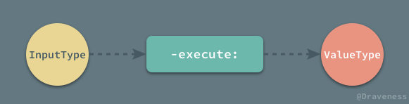
我们以下面的代码为例，先来看一下 RACCommand 是如何工作的：
RACCommand *command = [[RACCommand alloc] initWithSignalBlock:^RACSignal * _Nonnull(NSNumber * _Nullable input) {
return [RACSignal createSignal:^RACDisposable * _Nullable(id<RACSubscriber> _Nonnull subscriber) {
NSInteger integer = [input integerValue];
for (NSInteger i = 0; i < integer; i++) {
[subscriber sendNext:@(i)];
}
[subscriber sendCompleted];
return nil;
}];
}];
[[command.executionSignals switchToLatest] subscribeNext:^(id _Nullable x) {
NSLog(@"%@", x);
}];
[command execute:@1];
[RACScheduler.mainThreadScheduler afterDelay:0.1
schedule:^{
[command execute:@2];
}];
[RACScheduler.mainThreadScheduler afterDelay:0.2
schedule:^{
[command execute:@3];
}];
首先使用 -initWithSignalBlock: 方法创建一个 RACCommand 的对象，传入一个类型为 InputType -> RACSignal<ValueType> 的 block，这个信号根据输入会发送对应次数的消息，如果运行上面的代码，会打印出：
0
0
1
0
1
2
-switchToLatest方法只能操作信号的信号。
每次 executionSignals 中发送了新的信号时，switchToLatest 方法返回的信号都会订阅这个最新的信号，这里也就保证了每次都会打印出最新的信号中的值。
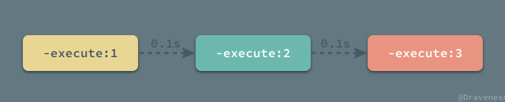
在上面代码中还有最后一个问题需要回答，为什么要使用 RACScheduler.mainThreadScheduler 延迟调用之后的 -execute: 方法？由于在默认情况下 RACCommand 都是不支持并发操作的，需要在上一次命令执行之后才可以发送下一次操作，否则就会返回错误信号 RACErrorSignal，这些错误可以通过订阅 command.errors 获得。
如果使用如下的方式执行几次 -execute: 方法：
[command execute:@1];
[command execute:@2];
[command execute:@3];
笔者相信，不出意外的话，你只能在控制台中看到输出 0。
最重要的内部『信号』
RACCommand 中最重要的内部『信号』就是 addedExecutionSignalsSubject：
@property (nonatomic, strong, readonly) RACSubject *addedExecutionSignalsSubject;
这个 RACSubject 对象通过各种操作衍生了几乎所有 RACCommand 中的其他信号，我们会在下一节中具体介绍；
既然 addedExecutionSignalsSubject 是一个 RACSubject，它不能在创建时预设好对订阅者发送的消息，它会在哪里接受数据并推送给订阅者呢？答案就在 -execute: 方法中：
- (RACSignal *)execute:(id)input {
BOOL enabled = [[self.immediateEnabled first] boolValue];
if (!enabled) {
NSError *error = [NSError errorWithDomain:RACCommandErrorDomain code:RACCommandErrorNotEnabled userInfo:@{
NSLocalizedDescriptionKey: NSLocalizedString(@"The command is disabled and cannot be executed", nil),
RACUnderlyingCommandErrorKey: self
}];
return [RACSignal error:error];
}
RACSignal *signal = self.signalBlock(input);
RACMulticastConnection *connection = [[signal
subscribeOn:RACScheduler.mainThreadScheduler]
multicast:[RACReplaySubject subject]];
[self.addedExecutionSignalsSubject sendNext:connection.signal];
[connection connect];
return [connection.signal setNameWithFormat:@"%@ -execute: %@", self, RACDescription(input)];
}
在方法中这里你也能看到连续几次执行 -execute: 方法不能成功的原因：每次执行这个方法时，都会从另一个信号 immediateEnabled 中读取是否能执行当前命令的 BOOL 值，如果不可以执行的话，就直接返回 RACErrorSignal。
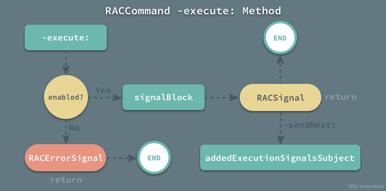
-execute:方法是唯一一个为addedExecutionSignalsSubject生产信息的方法。
在执行 signalBlock 返回一个 RACSignal 之后，会将当前信号包装成一个 RACMulticastConnection，然后调用 -sendNext: 方法发送到 addedExecutionSignalsSubject 上，执行 -connect 方法订阅原有的信号，最后返回。
复杂的初始化
与简单的 -execute: 方法相比，RACCommand 的初始化方法就复杂多了，虽然我们在方法中传入了 signalBlock，但是 -initWithEnabled:signalBlock: 方法只是对这个 block 进行了简单的 copy，真正使用这个 block 的还是上一节中的 -execute: 方法中。
由于 RACCommand 在初始化方法中初始化了七个高阶信号，它的实现非常复杂：
- (instancetype)initWithEnabled:(RACSignal *)enabledSignal signalBlock:(RACSignal<id> * (^)(id input))signalBlock {
self = [super init];
_addedExecutionSignalsSubject = [RACSubject new];
_signalBlock = [signalBlock copy];
_executionSignals = ...;
_errors = ...;
RACSignal *immediateExecuting = ...;
_executing = ...;
RACSignal *moreExecutionsAllowed = ...;
_immediateEnabled =...;
_enabled = ...;
return self;
}
这一小节并不能完全介绍全部的七个信号的实现，只会介绍其中的 immediateExecuting 和 moreExecutionsAllowed 两个临时信号，剩下的信号都会在下一节中分析。
表示当前有操作执行的信号
首先是 immediateExecuting 信号：
RACSignal *immediateExecuting = [[[[self.addedExecutionSignalsSubject
flattenMap:^(RACSignal *signal) {
return [[[signal
catchTo:[RACSignal empty]]
then:^{
return [RACSignal return:@-1];
}]
startWith:@1];
}]
scanWithStart:@0 reduce:^(NSNumber *running, NSNumber *next) {
return @(running.integerValue + next.integerValue);
}]
map:^(NSNumber *count) {
return @(count.integerValue > 0);
}]
startWith:@NO];
immediateExecuting 是一个用于表示当前是否有任务执行的信号，如果输入的 addedExecutionSignalsSubject 等价于以下的信号：
[RACSignal createSignal:^RACDisposable * _Nullable(id<RACSubscriber> _Nonnull subscriber) {
[subscriber sendNext:[RACSignal error:[NSError errorWithDomain:@"Error" code:1 userInfo:nil]]];
[subscriber sendNext:[RACSignal return:@1]];
[subscriber sendNext:[RACSignal createSignal:^RACDisposable * _Nullable(id<RACSubscriber> _Nonnull subscriber) {
[RACScheduler.mainThreadScheduler afterDelay:1
schedule:^
{
[subscriber sendCompleted];
}];
return nil;
}]];
[subscriber sendNext:[RACSignal return:@3]];
[subscriber sendCompleted];
return nil;
}];
在本文的所有章节中都会假设输入的
addedExecutionSignalsSubject信号跟上面的代码返回的完全相同。
那么，最后生成的高阶信号 immediateExecuting 如下：
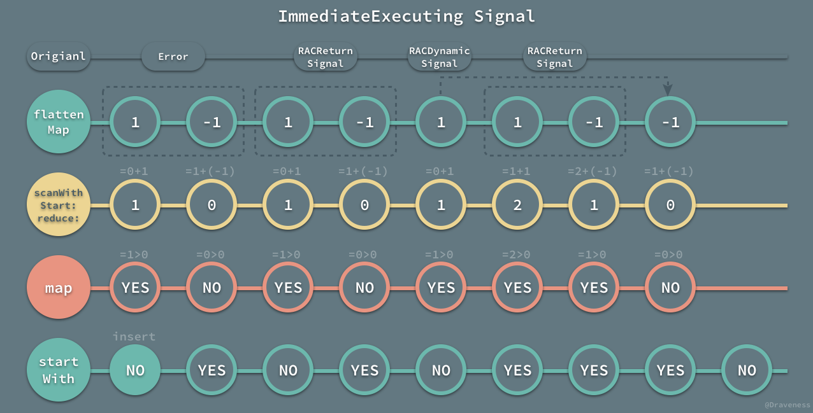
-catchTo:将所有的错误转换成RACEmptySignal信号；-flattenMap:将每一个信号的开始和结束的时间点转换成1和-1两个信号；-scanWithStart:reduce:从0开始累加原有的信号；-map:将大于1的信号转换为@YES；-startWith:在信号序列最前面加入@NO，表示在最开始时，没有任何动作在执行。
immediateExecuting 使用几个 RACSignal 的操作成功将原有的信号流转换成了表示是否有操作执行的信号流。
表示是否允许更多操作执行的信号
相比于 immediateExecuting 信号的复杂，moreExecutionsAllowed 就简单多了：
RACSignal *moreExecutionsAllowed = [RACSignal
if:[self.allowsConcurrentExecutionSubject startWith:@NO]
then:[RACSignal return:@YES]
else:[immediateExecuting not]];
因为文章中不准备介绍与并发执行有关的内容，所以这里的 then 语句永远不会执行，既然 RACCommand 不支持并行操作，那么这段代码就非常好理解了，当前 RACCommand 能否执行操作就是 immediateExecuting 取反：
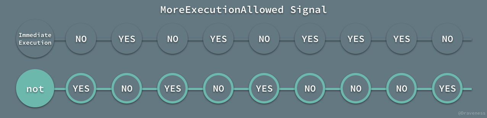
到这里所有初始化方法中的临时信号就介绍完了，在下一节中会继续介绍初始化方法中的其它高阶信号。
RACCommand 接口中的高阶信号
每一个 RACCommand 对象中都管理着多个信号，它在接口中暴露出的四个信号是这一节关注的重点：
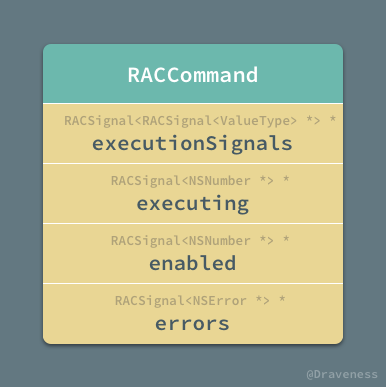
这一小节会按照顺序图中从上到下的顺序介绍 RACCommand 接口中暴露出来的信号，同时会涉及一些为了生成这些信号的中间产物。
executionSignals
executionSignals 是 RACCommand 中最重要的信号；从类型来看，它是一个包含信号的信号，在每次执行 -execute: 方法时，最终都会向 executionSignals 中传入一个最新的信号。
虽然它最重要，但是executionSignals 是这个几个高阶信号中实现最简单的：
_executionSignals = [[[self.addedExecutionSignalsSubject
map:^(RACSignal *signal) {
return [signal catchTo:[RACSignal empty]];
}]
deliverOn:RACScheduler.mainThreadScheduler]
setNameWithFormat:@"%@ -executionSignals", self];
它只是将信号中的所有的错误 NSError 转换成了 RACEmptySignal 对象，并派发到主线程上。
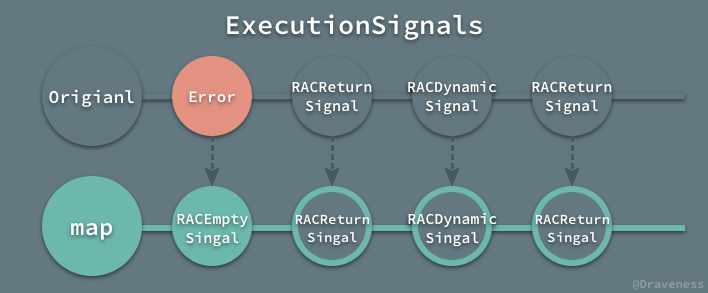
如果你只订阅了 executionSignals，那么其实你不会收到任何的错误，所有的错误都会以 -sendNext: 的形式被发送到 errors 信号中，这会在后面详细介绍。
executing
executing 是一个表示当前是否有任务执行的信号，这个信号使用了在上一节中介绍的临时变量作为数据源：
_executing = [[[[[immediateExecuting
deliverOn:RACScheduler.mainThreadScheduler]
startWith:@NO]
distinctUntilChanged]
replayLast]
setNameWithFormat:@"%@ -executing", self];
这里对 immediateExecuting 的变换还是非常容易理解的：
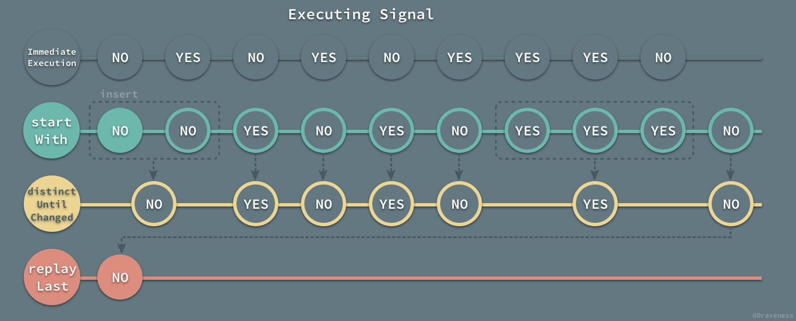
最后的 replayLast 方法将原有的信号变成了容量为 1 的 RACReplaySubject 对象，这样在每次有订阅者订阅 executing 信号时，都只会发送最新的状态，因为订阅者并不关心过去的 executing 的值。
enabled
enabled 信号流表示当前的命令是否可以再次被执行，也就是 -execute: 方法能否可以成功执行新的任务；该信号流依赖于另一个私有信号 immediateEnabled：
RACSignal *enabledSignal = [RACSignal return:@YES];
_immediateEnabled = [[[[RACSignal
combineLatest:@[ enabledSignal, moreExecutionsAllowed ]]
and]
takeUntil:self.rac_willDeallocSignal]
replayLast];
虽然这个信号的实现比较简单，不过它同时与三个信号有关，enabledSignal、moreExecutionsAllowed 以及 rac_willDeallocSignal：
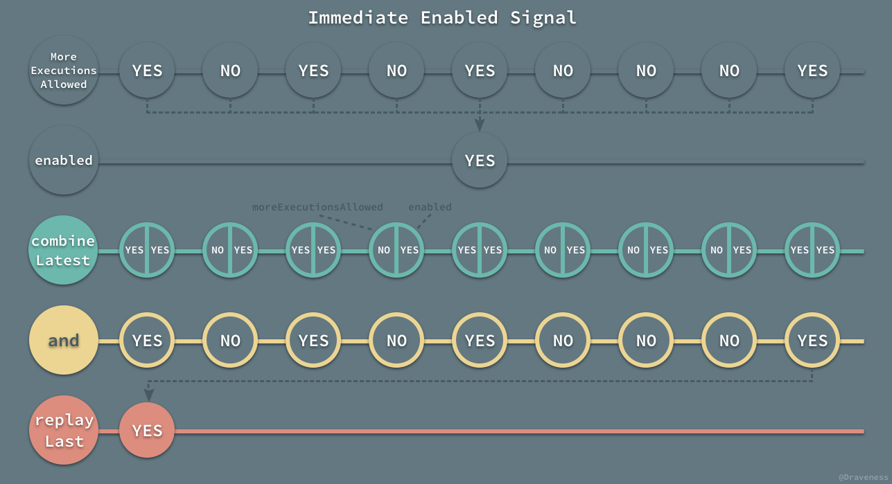
虽然图中没有体现出方法 -takeUntil:self.rac_willDeallocSignal 的执行，不过你需要知道，这个信号在当前 RACCommand 执行 dealloc 之后就不会再发出任何消息了。
而 enabled 信号其实与 immediateEnabled 相差无几：
_enabled = [[[[[self.immediateEnabled
take:1]
concat:[[self.immediateEnabled skip:1] deliverOn:RACScheduler.mainThreadScheduler]]
distinctUntilChanged]
replayLast]
setNameWithFormat:@"%@ -enabled", self];
从名字你可以看出来，immediateEnabled 在每次原信号发送消息时都会重新计算，而 enabled 调用了 -distinctUntilChanged 方法，所以如果连续几次值相同就不会再次发送任何消息。
除了调用 -distinctUntilChanged 的区别之外，你可以看到 enabled 信号在最开始调用了 -take:和 -concat: 方法：
[[self.immediateEnabled
take:1]
concat:[[self.immediateEnabled skip:1] deliverOn:RACScheduler.mainThreadScheduler]]
虽然序列并没有任何的变化，但是在这种情况下，enabled 信号流中的第一个值会在订阅线程上到达，剩下的所有的值都会在主线程上派发；如果你知道，在一般情况下，我们都会使用 enabled 信号来控制 UI 的改变（例如 UIButton），相信你就会明白这么做的理由了。
errors
错误信号是 RACCommand 中比较简单的信号；为了保证 RACCommand 对此执行 -execute: 方法也可以继续运行，我们只能将所有的错误以其它的形式发送到 errors 信号中，防止向 executionSignals 发送错误信号后，executionSignals 信号就会中止的问题。
我们使用如下的方式创建 errors 信号：
RACMulticastConnection *errorsConnection = [[[self.addedExecutionSignalsSubject
flattenMap:^(RACSignal *signal) {
return [[signal
ignoreValues]
catch:^(NSError *error) {
return [RACSignal return:error];
}];
}]
deliverOn:RACScheduler.mainThreadScheduler]
publish];
_errors = [errorsConnection.signal setNameWithFormat:@"%@ -errors", self];
[errorsConnection connect];
信号的创建过程是把所有的错误消息重新打包成 RACErrorSignal 并在主线程上进行派发：
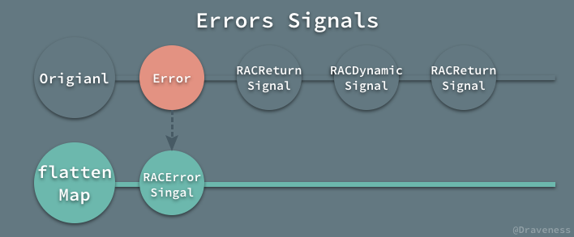
使用者只需要调用 -subscribeNext: 就可以从这个信号中获取所有执行过程中发生的错误。
RACCommand 的使用
RACCommand 非常适合封装网络请求，我们可以使用下面的代码封装一个网络请求：
RACCommand *command = [[RACCommand alloc] initWithSignalBlock:^RACSignal * _Nonnull(id _Nullable input) {
return [RACSignal createSignal:^RACDisposable * _Nullable(id<RACSubscriber> _Nonnull subscriber) {
NSURL *url = [NSURL URLWithString:@"http://localhost:3000"];
AFHTTPSessionManager *manager = [[AFHTTPSessionManager alloc] initWithBaseURL:url];
NSString *URLString = [NSString stringWithFormat:@"/api/products/%@", input ?: @1];
NSURLSessionDataTask *task = [manager GET:URLString parameters:nil progress:nil
success:^(NSURLSessionDataTask * _Nonnull task, id _Nullable responseObject) {
[subscriber sendNext:responseObject];
[subscriber sendCompleted];
} failure:^(NSURLSessionDataTask * _Nullable task, NSError * _Nonnull error) {
[subscriber sendError:error];
}];
return [RACDisposable disposableWithBlock:^{
[task cancel];
}];
}];
}];
上面的 RACCommand 对象可以通过 -execute: 方法执行，同时，订阅 executionSignals 以及 errors 来获取网络请求的结果。
[[command.executionSignals switchToLatest] subscribeNext:^(id _Nullable x) {
NSLog(@"%@", x);
}];
[command.errors subscribeNext:^(NSError * _Nullable x) {
NSLog(@"%@", x);
}];
[command execute:@1];
向方法 -execute: 中传入了 @1 对象，从服务器中获取了 id = 1 的商品对象；当然，我们也可以传入不同的 id 来获取不同的模型，所有的网络请求以及 JSON 转换模型的逻辑都可以封装到这个 RACCommand 的 block 中，外界只是传入一个 id，最后就从 executionSignals 信号中获取了开箱即用的对象。
总结
使用 RACCommand 能够优雅地将包含副作用的操作和与副作用无关的操作分隔起来；整个 RACCommand 相当于一个黑箱，从 -execute: 方法中获得输入，最后以向信号发送消息的方式，向订阅者推送结果。
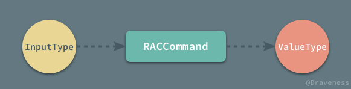
这种执行任务的方式就像是一个函数，根据输入的不同，有着不同的输出，非常适合与 UI、网络操作的相关的任务，这也是 RACCommand 的设计的优雅之处。
References
Github Repo：iOS-Source-Code-Analyze
Follow: Draveness · GitHub
Source: http://draveness.me/raccommand